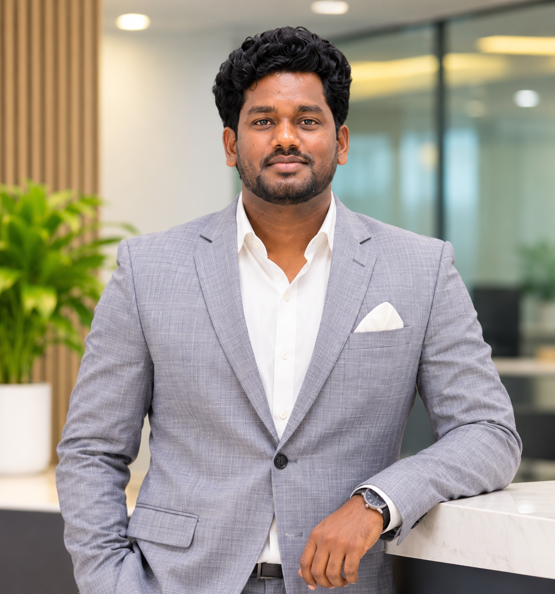

Think in user journeys
Translate product requirements into meaningful scenarios that cover the happy path, edge cases and critical business flows.
I help product teams ship with confidence through thoughtful test strategy, reliable automation and a sharp focus on real-world user journeys.

Senior QA Automation Engineer with 8+ years across enterprise web platforms, APIs, media products and mobile applications. I bring a balanced approach: understand the risk, test the journey, automate what matters and make release quality visible.
Translate product requirements into meaningful scenarios that cover the happy path, edge cases and critical business flows.
Build repeatable web and API checks that reduce repetitive effort and help teams get faster feedback.
Use clear defect reporting, execution tracking and cross-team collaboration to support informed release decisions.
A practical mix of automation frameworks, API validation, test management and CI tools used across the delivery lifecycle.
Enterprise administration, secure communications, digital publishing and mobile experiences — each with different risks, workflows and user expectations.
Improving release confidence for a complex web and API product.
Validated an encrypted email service with attention to API behaviour and deployment stability.
Tested content-led web experiences where navigation, access and playback are central to the user journey.
Tested distinct application environments, from Android app releases to public-facing and internal admin portals.
Progressively broader QA responsibilities, from hands-on testing and automation to test strategy and team coordination.
Lead quality planning with a team of QA engineers; combine manual, web automation and API testing; coordinate defect tracking with development teams; and support end-to-end quality for enterprise, media and mobile products.
Focused on RSign encrypted email service testing, API automation support and pre-/post-production checks in an Agile delivery environment.
Developed web application automation scripts, clarified client requirements and carried out functional and regression testing.
Santhiram Engineering College, Nandyal · 2012–2016
Open to conversations around QA automation, software quality and engineering opportunities.